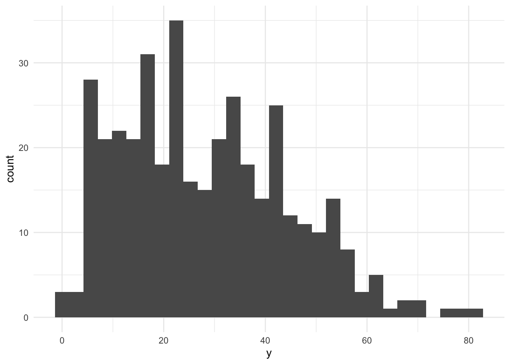
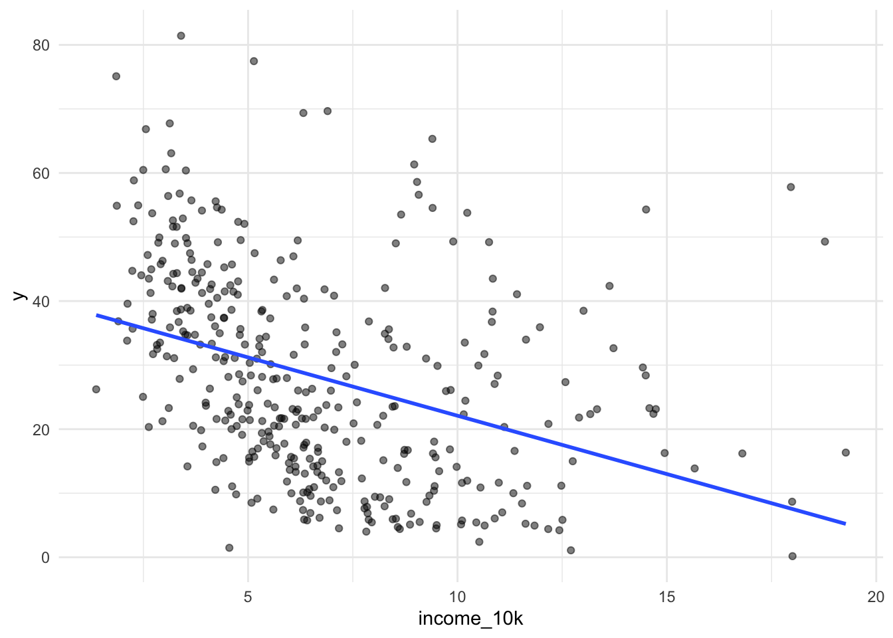
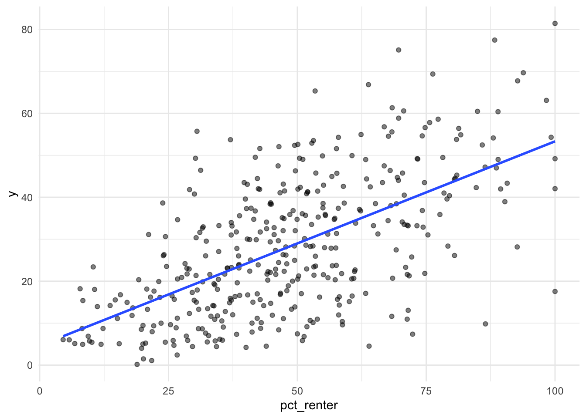
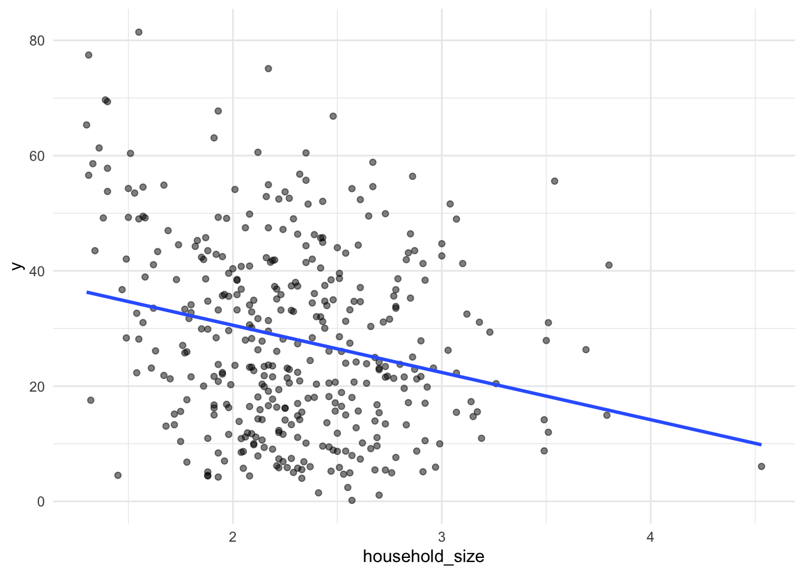
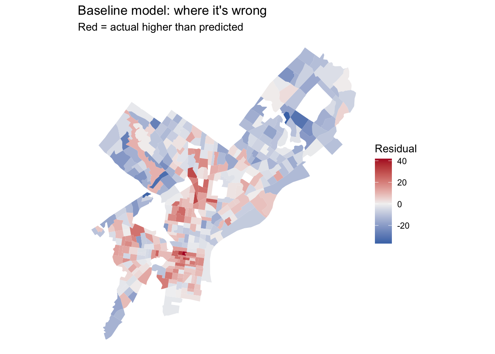
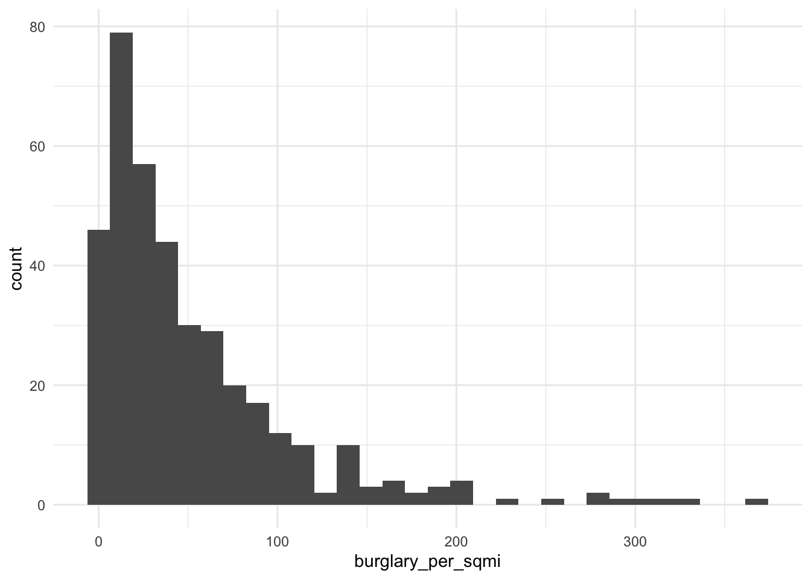
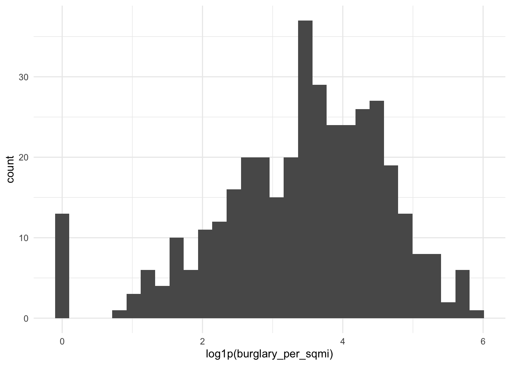
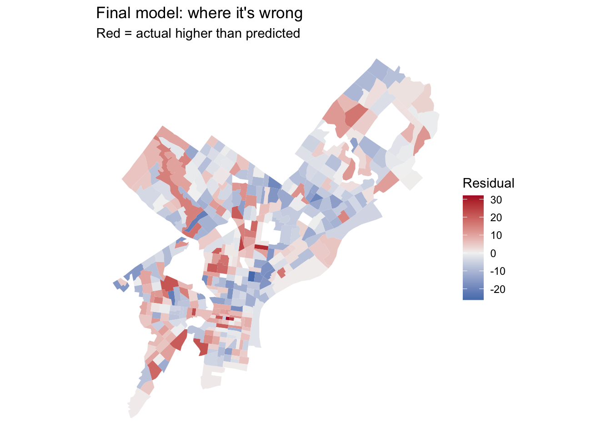
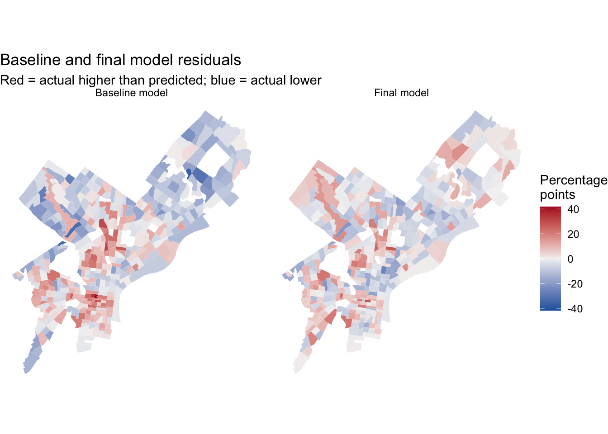
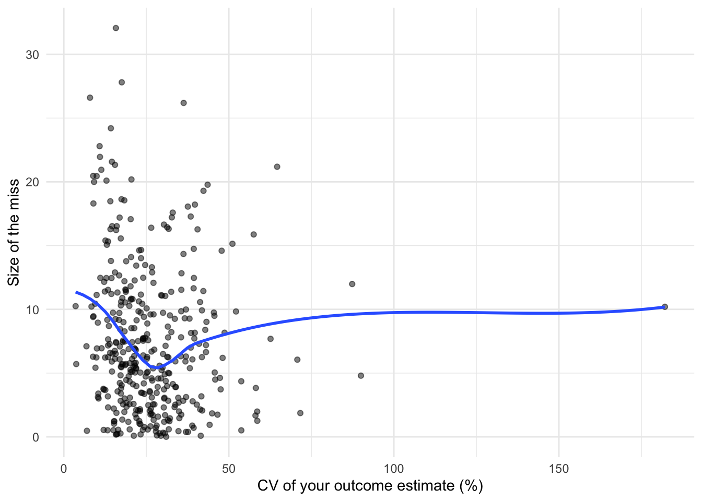

Code
library(tidyverse)
library(tidycensus)
library(sf)
library(caret)
Sys.getenv("CENSUS_API_KEY") != "" # should print TRUE[1] TRUEMUSA 5080 · Integrates Weeks 1–5 · Due Friday, October 16
Xuanyu Zhou
October 15, 2026
This is not a competition. There’s no leaderboard and no target RMSE. The goal is to practice the full prediction workflow on a question you choose, and to find out what actually helps. Some features you’re sure will help won’t, and some you add on a whim will. Both are findings.
You’ll:
Timing. Parts 1–4 use only what we’ve covered through Week 5. You can finish them before the October 9 lecture. Part 5 is new material; the lecture explains it, and the instructions below give you the essentials.
Type the code yourself. The worked examples show the pattern. Your job is to apply it to your outcome and your data choices.
Every model is cross-validated on the same tracts with the same folds, so the rows in your model log are comparable. If a new variable has missing values, fill them (for example, 0 for a count, or the median with a note) or choose a different variable. The cv_rmse() helper below will stop and tell you if you break this rule.
Your outcome comes from the 2019–2023 ACS. Pull open data from 2023 or earlier (2021–2023 is ideal). Using 2025 data to predict a 2023 outcome uses information from the future, which a real prediction model would never have.
Don’t use any variable that’s built from your outcome or measures the same thing another way. Ask yourself: would an agency trying to predict this outcome for a tract have this variable? If the answer is “only because it’s basically the outcome,” leave it out.
[1] TRUEThis function runs 10-fold cross-validation with the same seed every time, so every model in your log is tested on the same folds. You don’t need to change it. Read it once so you know what it does.
ctrl <- trainControl(method = "cv", number = 10)
cv_rmse <- function(formula, data) {
df <- if (inherits(data, "sf")) st_drop_geometry(data) else data
vars <- all.vars(formula)
bad <- vars[sapply(vars, function(v) any(is.na(df[[v]])))]
if (length(bad) > 0) {
stop("These variables have NAs: ", paste(bad, collapse = ", "),
". Fill them or choose another variable (Rule 1: don't drop rows).")
}
set.seed(5080)
fit <- train(formula, data = df, method = "lm", trControl = ctrl)
fit$results$RMSE
}Every time you fit a new model, add a row. By the end, this table is the story of your assignment.
Pick a tract-level ACS variable for Philadelphia that matters for policy. Two outcomes are off limits: median gross rent (we did it in lab) and median home value (save it for A4).
Some ideas if you’re stuck:
| Outcome | Why an agency might care | ACS table |
|---|---|---|
| % of households with no vehicle | Transit planning | B08201 or B25044 |
| Mean travel time to work | Access to jobs | B08013_001 ÷ B08303_001 |
| % of people below poverty | Targeting services | B17001 |
| % of housing units vacant | Housing and blight | B25002 |
| % of households overcrowded | Housing conditions | B25014 |
Use load_variables(2023, "acs5") to browse and find exact variable codes.
Choose three to five ACS predictors for your baseline model. They should be things that plausibly relate to your outcome, but none of them may be built from your outcome (Rule 3).
philly_tracts <- get_acs(
geography = "tract",
state = "PA",
county = "Philadelphia",
variables = c(
total_pop = "B01003_001",
# your outcome's numerator and denominator (or median), e.g.:
total_hh = "B08201_001",
no_vehicle_hh = "B08201_002",
# your baseline predictors, e.g.:
median_income = "B19013_001",
occupied_units = "B25003_001",
renter_units = "B25003_003",
avg_hh_size = "B25010_001"
),
year = 2023,
output = "wide",
geometry = TRUE
) %>%
st_transform(2272)
|
| | 0%
|
| | 1%
|
|= | 1%
|
|= | 2%
|
|== | 3%
|
|=== | 4%
|
|=== | 5%
|
|==== | 6%
|
|===== | 7%
|
|====== | 8%
|
|====== | 9%
|
|======= | 10%
|
|======== | 11%
|
|========= | 12%
|
|========== | 14%
|
|=========== | 15%
|
|=========== | 16%
|
|============ | 17%
|
|============= | 18%
|
|============= | 19%
|
|============== | 20%
|
|=============== | 21%
|
|=============== | 22%
|
|================= | 24%
|
|================= | 25%
|
|================== | 26%
|
|=================== | 27%
|
|=================== | 28%
|
|==================== | 29%
|
|===================== | 30%
|
|===================== | 31%
|
|====================== | 32%
|
|======================= | 33%
|
|======================= | 34%
|
|======================== | 35%
|
|========================= | 36%
|
|========================== | 37%
|
|=========================== | 38%
|
|============================ | 39%
|
|============================ | 40%
|
|============================= | 41%
|
|============================== | 42%
|
|============================== | 43%
|
|=============================== | 44%
|
|================================ | 45%
|
|================================ | 46%
|
|================================= | 47%
|
|================================== | 48%
|
|================================== | 49%
|
|=================================== | 50%
|
|==================================== | 51%
|
|===================================== | 52%
|
|===================================== | 53%
|
|====================================== | 54%
|
|======================================= | 55%
|
|======================================= | 56%
|
|======================================== | 57%
|
|========================================= | 58%
|
|========================================= | 59%
|
|========================================== | 60%
|
|=========================================== | 61%
|
|=========================================== | 62%
|
|============================================= | 64%
|
|============================================= | 65%
|
|============================================== | 66%
|
|=============================================== | 67%
|
|================================================ | 68%
|
|================================================ | 69%
|
|================================================= | 70%
|
|================================================== | 71%
|
|================================================== | 72%
|
|=================================================== | 73%
|
|==================================================== | 74%
|
|==================================================== | 75%
|
|===================================================== | 76%
|
|====================================================== | 77%
|
|====================================================== | 78%
|
|======================================================= | 79%
|
|======================================================== | 80%
|
|======================================================== | 81%
|
|========================================================= | 82%
|
|========================================================== | 83%
|
|=========================================================== | 84%
|
|=========================================================== | 85%
|
|============================================================ | 86%
|
|============================================================= | 87%
|
|============================================================= | 88%
|
|============================================================== | 89%
|
|=============================================================== | 90%
|
|=============================================================== | 91%
|
|================================================================ | 92%
|
|================================================================= | 93%
|
|================================================================== | 94%
|
|================================================================== | 95%
|
|=================================================================== | 96%
|
|==================================================================== | 97%
|
|===================================================================== | 98%
|
|===================================================================== | 99%
|
|======================================================================| 100%philly_tracts <- philly_tracts %>%
mutate(
# build your outcome, e.g. a percentage:
y = no_vehicle_hhE / total_hhE * 100,
# and its reliability. For a percentage, use tidycensus::moe_prop();
# for a median or count, use the E and M columns directly.
y_moe = moe_prop(no_vehicle_hhE, total_hhE, no_vehicle_hhM, total_hhM) * 100,
y_cv = (y_moe / 1.645) / y * 100,
# your predictors:
income_10k = median_incomeE / 10000,
pct_renter = renter_unitsE / occupied_unitsE * 100,
household_size = avg_hh_sizeE
)Before you commit, check three things.
[1] 20 Min. 1st Qu. Median Mean 3rd Qu. Max. NAs
3.572 17.204 23.410 Inf 31.959 Inf 20 reliability n
1 High 29
2 Low 66
3 Moderate 313
If more than about a third of tracts have low reliability, consider a different outcome, or one built from larger counts. Write your reasoning either way.
Answer (2–3 sentences): What is your outcome, why would an agency want to predict it, and how reliable is it?
Your answer: Outcome is the percentage of households with no vehicle. An agency might want to predict it to inform transit planning and resource allocation for public transportation. The reliability of this outcome is moderate, with 342 of total 408 tracts having high or moderate reliability.
Filter once, here, and never again. Every later step uses tracts.
[1] 408[1] 381Answer: How many tracts did you lose, and what kinds of places are they?
Your answer: I lost 27 tracts. They are mostly areas with low population or missing data for the outcome variable.
Plot your outcome against each predictor before modeling (the Week 3 habit).



Call:
lm(formula = f1, data = tracts)
Residuals:
Min 1Q Median 3Q Max
-36.767 -8.686 -1.422 8.587 41.841
Coefficients:
Estimate Std. Error t value Pr(>|t|)
(Intercept) 29.07457 5.90326 4.925 1.26e-06 ***
income_10k -1.42497 0.22282 -6.395 4.75e-10 ***
pct_renter 0.38623 0.03782 10.211 < 2e-16 ***
household_size -4.36950 1.63143 -2.678 0.00772 **
---
Signif. codes: 0 '***' 0.001 '**' 0.01 '*' 0.05 '.' 0.1 ' ' 1
Residual standard error: 12.32 on 377 degrees of freedom
Multiple R-squared: 0.4329, Adjusted R-squared: 0.4284
F-statistic: 95.92 on 3 and 377 DF, p-value: < 2.2e-16# A tibble: 1 × 4
model added cv_rmse notes
<chr> <chr> <dbl> <chr>
1 m1 ACS baseline 12.4 Income, renter share, and household size; baselineWrite the CV RMSE as a sentence, in your outcome’s units: “On tracts it hasn’t seen, the baseline model misses by about 12.38.”
Save this map. You’ll compare it to your final model’s map in Part 6.
tracts <- tracts %>% mutate(resid_m1 = residuals(m1))
ggplot(tracts) +
geom_sf(aes(fill = resid_m1), color = NA) +
scale_fill_gradient2(low = "#2166ac", mid = "grey95", high = "#b2182b", midpoint = 0) +
theme_void() +
labs(title = "Baseline model: where it's wrong",
subtitle = "Red = actual higher than predicted",
fill = "Residual")
Answer: Where do the residuals cluster? What might those places have in common that your model doesn’t know about? Use this answer to choose your open data layers in Part 3.
Your answer: North and Downtown Philly.
This suggests that income, renter share, and household size do not fully capture the spatial differences in vehicle availability. Access to public transportation may explain some of this pattern, so I would look for rail/metro/trolley/bus/bike station from 2023 or earlier to construct distance and density measures.
Many of the city’s datasets on OpenDataPhilly are served through a Carto SQL API. You send a SQL query in a URL, and it sends back data. Ask for format=GeoJSON and st_read() reads the result directly, just like the Indego feed in Week 4.
The pattern:
https://phl.carto.com/api/v2/sql?format=GeoJSON&q=SELECT ... FROM table_name WHERE ...Three pieces of SQL are all you need:
SELECT the_geom, column1, column2 chooses which columns come back. Always include the_geom, or you get no geometry.FROM table_name chooses the dataset.WHERE ... filters rows. Filter in the query, not in R. Some tables have millions of rows, and pulling everything will be slow or fail.This helper builds the URL for you. Spaces and symbols in a URL need encoding, and URLencode() handles that.
On a dataset’s OpenDataPhilly page, look for the API link. The table name is the word after FROM in the example query. To see what values a column takes before you filter on it, ask for a count in CSV format:
# What kinds of crime are in the incidents table in 2023?
url <- paste0("https://phl.carto.com/api/v2/sql?format=csv&q=",
URLencode("SELECT text_general_code, COUNT(*) AS n
FROM incidents_part1_part2
WHERE dispatch_date >= '2023-01-01' AND dispatch_date < '2024-01-01'
GROUP BY text_general_code ORDER BY n DESC"))
read_csv(url)# A tibble: 32 × 2
text_general_code n
<chr> <dbl>
1 Thefts 37054
2 Other Assaults 25986
3 Motor Vehicle Theft 22478
4 Vandalism/Criminal Mischief 17346
5 All Other Offenses 13334
6 Theft from Vehicle 13002
7 Fraud 7661
8 Aggravated Assault No Firearm 5134
9 Burglary Residential 3800
10 Aggravated Assault Firearm 3320
# ℹ 22 more rowsburglary <- carto_get(
"SELECT the_geom, text_general_code, dispatch_date
FROM incidents_part1_part2
WHERE dispatch_date >= '2023-01-01' AND dispatch_date < '2024-01-01'
AND text_general_code = 'Burglary Residential'"
) %>%
st_transform(st_crs(tracts)) # Carto returns EPSG 4326; translate immediately
nrow(burglary)[1] 3800Some records have no location. Drop them with filter(!st_is_empty(burglary)), and count how many you lost. Every point you drop is a point that won’t be counted.
These tables were available on Carto as of this fall. If a query fails, check the dataset’s OpenDataPhilly page for the current table name.
| Data | Table | Filter on | Notes |
|---|---|---|---|
| Crime incidents | incidents_part1_part2 |
dispatch_date, text_general_code |
Pick specific offense types |
| Shooting victims | shootings |
date_ |
Small enough to pull several years |
| 311 requests | public_cases_fc |
requested_datetime, service_name |
Use the count query above to see service names |
| Indego stations | (not Carto) https://www.rideindego.com/stations/json/ |
— | The Week 4 feed |
Datasets not on Carto often have a GeoJSON download link on their OpenDataPhilly page. st_read() reads those URLs too. For example, navigage to https://opendataphilly.org/, find a dataset that you’d like to import. I found city landmarks. On the page there is a link to a GeoJSON file. I simply right-clicked on that hyperlink and copied it and then used st_read() and pasted the link:
landmarks <- st_read(“https://hub.arcgis.com/api/v3/datasets/6b2fe4a0fbe14e0a8e6afceaea230b8e_0/downloads/data?format=geojson&spatialRefId=4326&where=1%3D1”)
Pull at least two layers that you think relate to your outcome. Base your choice on your Part 2C answer.
character(0)#| label: my-layers
layer1 <- st_read(
"https://opendata.arcgis.com/api/v3/datasets/af52d74b872045d0abb4a6bbbb249453_0/downloads/data?format=geojson&spatialRefId=4326",
quiet = TRUE
) %>%
st_transform(st_crs(tracts))
zip_file <- tempfile(fileext = ".zip")
data_dir <- tempfile()
dir.create(data_dir)
download.file(
"https://www.rideindego.com/wp-content/uploads/2024/01/indego-trips-2023-q4.zip",
destfile = zip_file,
mode = "wb"
)
unzip(zip_file, exdir = data_dir)
csv_file <- list.files(
data_dir,
pattern = "\\.csv$",
recursive = TRUE,
full.names = TRUE
)
trips <- read_csv(csv_file[1], show_col_types = FALSE)
station_locations <- bind_rows(
trips %>%
transmute(
station_id = start_station,
lon = start_lon,
lat = start_lat
),
trips %>%
transmute(
station_id = end_station,
lon = end_lon,
lat = end_lat
)
) %>%
filter(
!is.na(station_id),
!is.na(lon),
!is.na(lat),
between(lon, -76, -74),
between(lat, 39, 41)
)
bike_stations <- station_locations %>%
count(station_id, lon, lat) %>%
group_by(station_id) %>%
slice_max(n, n = 1, with_ties = FALSE) %>%
ungroup()
layer2 <- bike_stations %>%
st_as_sf(coords = c("lon", "lat"), crs = 4326) %>%
st_transform(st_crs(tracts))
layer3 <- st_read(
"https://opendata.arcgis.com/api/v3/datasets/cf49c62fbc17430aa818e900556d207e_0/downloads/data?format=geojson&spatialRefId=4326",
quiet = TRUE
) %>%
st_transform(st_crs(tracts))Answer: Why these layers? What do you expect them to capture that the ACS variables don’t?
Your answer: I selected High Speed Stations, Indego bike-share stations observed in the fourth quarter of 2023, and Regional Rail stations to measure access to different transportation options. These layers provide information about nearby transportation facilities that income, renter share, and household size do not directly capture. I expect better access to these options to be associated with a higher percentage of households without vehicles, although station locations alone do not measure service frequency or quality.
Every feature below reuses a Week 4 tool. The worked examples use burglaries and Indego stations; you build the same types from your own layers.
How many burglaries fall in each tract?
Min. 1st Qu. Median Mean 3rd Qu. Max.
0.000 4.000 7.000 9.446 13.000 48.000 A tract with no burglaries gets 0, not NA, so Rule 1 is safe.
Raw counts mostly measure tract size. A big tract has more of everything. Normalize by area, by population, or by housing units, depending on what makes sense for the thing you’re counting.
If a tract has 40 residents and 3 burglaries, its rate is 75 per 1,000, which is a huge number built on tiny counts. Look at the tracts with the highest per-capita rates before you trust them. This is the Week 3 lesson about small denominators again.
How far is each tract from its nearest Indego station? Use the Week 4 pattern: find the nearest feature, then measure to it element by element.
stations <- st_read("https://www.rideindego.com/stations/json/", quiet = TRUE) %>%
st_transform(st_crs(tracts))
tract_pts <- st_point_on_surface(tracts) # always inside the tract, unlike a centroid
nearest_idx <- st_nearest_feature(tract_pts, stations)
tracts <- tracts %>%
mutate(dist_station_mi = as.numeric(
st_distance(tract_pts, stations[nearest_idx, ], by_element = TRUE)) / 5280)Sometimes the “thing” is a single location, such as City Hall as a stand-in for the center of the regional economy.
Build at least three spatial features from your own layers, and use at least two types (count, density, nearest distance, distance to a place). After each one, fit a model, cross-validate it, and log it.
nearest_highspeed <- st_nearest_feature(tract_pts, layer1)
tracts <- tracts %>%
mutate(dist_highspeed_mi = as.numeric(
st_distance(
tract_pts,
layer1[nearest_highspeed, ],
by_element = TRUE
)
) / 5280)
f2 <- y ~ income_10k + pct_renter + household_size + dist_highspeed_mi
model_log <- model_log %>%
add_row(model = "m2", added = "Distance to nearest high-speed station",
cv_rmse = cv_rmse(f2, tracts),
notes = "none")
tracts <- tracts %>%
mutate(
area_sqmi = as.numeric(st_area(.)) / 27878400,
n_bike = lengths(st_intersects(., layer2)),
bike_per_sqmi = n_bike / area_sqmi
)
f3 <- y ~ income_10k + pct_renter + household_size + dist_highspeed_mi + bike_per_sqmi
m3 <- lm(f3, data = tracts)
model_log <- model_log %>%
add_row(
model = "m3",
added = "Indego stations per square mile",
cv_rmse = cv_rmse(f3, tracts),
notes = "None"
)
nearest_rail <- st_nearest_feature(tract_pts, layer3)
tracts <- tracts %>%
mutate(
dist_rail_mi = as.numeric(
st_distance(
tract_pts,
layer3[nearest_rail, ],
by_element = TRUE
)
) / 5280
)
f4 <- y ~ income_10k + pct_renter + household_size + dist_highspeed_mi + bike_per_sqmi + dist_rail_mi
m4 <- lm(f4, data = tracts)
model_log <- model_log %>%
add_row(
model = "m4",
added = "Distance to nearest Regional Rail station",
cv_rmse = cv_rmse(f4, tracts),
notes = "None"
)
# repeat for each feature
model_log# A tibble: 4 × 4
model added cv_rmse notes
<chr> <chr> <dbl> <chr>
1 m1 ACS baseline 12.4 Income, renter share,…
2 m2 Distance to nearest high-speed station 10.6 none
3 m3 Indego stations per square mile 10.1 None
4 m4 Distance to nearest Regional Rail station 10.0 None Answer: Which spatial feature helped most? Did any feature you expected to help do nothing, or make CV RMSE worse? Why might that be?
Your answer: Distance to High speed help most. Distance to Indego stations did not help much, possibly because the presence of bike stations does not necessarily indicate accessibility or usage, and other factors like station density or connectivity may be more relevant.
Watch the October 9 recorded lecture before you start this part. Below is a summary to work from.
So far, every predictor has entered the model as a straight line: each additional unit of X changes predicted Y by the same amount, everywhere. Transformations let the model bend. For prediction, the question is simply does the bend lower CV RMSE? For interpretation, each transformation changes what a coefficient means, so you need to know how to read it.
Keep your outcome y untransformed in this assignment. If you model log(y), your CV RMSE comes out in log units and can’t be compared to the other rows in your log. (Predicting a logged outcome well requires back-transforming, which is an A4 topic.)
Many urban variables are skewed: a few tracts have huge values, and most have small ones. Income, density, and counts are typical. A log compresses the long tail, so a model can use the difference between 1 and 10 as well as the difference between 100 and 1,000.


log(0) is -Inf, and it will break your model. Counts and densities often include zeros. Use log1p(x), which computes log(x + 1), for anything that can be 0.
Reading the coefficient: when a predictor is logged, a 1% increase in X goes with a change of about β/100 in Y, in Y’s units. With log1p, this reading is approximate for small values of X.
If your scatterplot bends (rising and then flattening, or falling and then rising), a squared term lets the line curve. Write it with I(), which tells R to do the arithmetic rather than read ^ as formula syntax.
Call:
lm(formula = y ~ dist_ch_mi + I(dist_ch_mi^2), data = tracts)
Residuals:
Min 1Q Median 3Q Max
-27.721 -8.549 -0.983 7.699 43.547
Coefficients:
Estimate Std. Error t value Pr(>|t|)
(Intercept) 45.62849 1.78168 25.610 < 2e-16 ***
dist_ch_mi -4.14563 0.64648 -6.413 4.27e-10 ***
I(dist_ch_mi^2) 0.09331 0.04854 1.922 0.0553 .
---
Signif. codes: 0 '***' 0.001 '**' 0.01 '*' 0.05 '.' 0.1 ' ' 1
Residual standard error: 12.87 on 378 degrees of freedom
Multiple R-squared: 0.3792, Adjusted R-squared: 0.3759
F-statistic: 115.4 on 2 and 378 DF, p-value: < 2.2e-16Reading the coefficient: you can’t read either coefficient alone anymore. The effect of X depends on where you are along X. A positive linear term with a negative squared term means Y rises with X and then levels off or turns down. Plot the fitted curve to see it:
Sometimes a number works better as groups, either because the relationship isn’t smooth or because the categories are meaningful. You can make categories from any variable with case_when() or cut(), and then make sure R treats them as a factor.
ring n
1 Core 79
2 Inner 134
3 Outer 168
Call:
lm(formula = y ~ ring, data = tracts)
Residuals:
Min 1Q Median 3Q Max
-33.724 -10.328 -1.487 8.377 42.965
Coefficients:
Estimate Std. Error t value Pr(>|t|)
(Intercept) 38.461 1.521 25.289 <2e-16 ***
ringInner -3.650 1.917 -1.904 0.0577 .
ringOuter -20.512 1.844 -11.123 <2e-16 ***
---
Signif. codes: 0 '***' 0.001 '**' 0.01 '*' 0.05 '.' 0.1 ' ' 1
Residual standard error: 13.52 on 378 degrees of freedom
Multiple R-squared: 0.3154, Adjusted R-squared: 0.3118
F-statistic: 87.09 on 2 and 378 DF, p-value: < 2.2e-16Reading the coefficients: R turns a factor with k categories into k − 1 dummy variables. The category left out is the reference level (here, “Core,” the first level). Each coefficient is the difference from the reference: ringOuter is how much higher or lower predicted Y is in outer tracts compared to core tracts, holding everything else in the model constant. To change the reference, use relevel(ring, ref = "Outer").
If a category has only a handful of tracts, its coefficient is unstable, and in cross-validation some folds may not contain it at all. Aim for at least 20 tracts per category.
Try at least one of each: a log, a squared term, and a categorical variable. Choose which variables to transform based on your plots, not at random. Log each model.
f_log <- y ~ income_10k + pct_renter + household_size +
dist_highspeed_mi + log1p(bike_per_sqmi) + dist_rail_mi
model_log <- model_log %>%
add_row(model = "m_log", added = "log of bike per sqmi",
cv_rmse = cv_rmse(f_log, tracts),
notes = "log")
# squared term
f_sq <- y ~ income_10k + pct_renter + household_size +
dist_highspeed_mi + I(dist_highspeed_mi^2) +
bike_per_sqmi + dist_rail_mi
m_sq <- lm(f_sq, data = tracts)
model_log <- model_log %>%
add_row(
model = "m_sq",
added = "sq of high speed station",
cv_rmse = cv_rmse(f_sq, tracts),
notes = "sq"
)
# categorical
tracts <- tracts %>%
mutate(
station_access = case_when(
dist_highspeed_mi < 0.5 ~ "Near",
dist_highspeed_mi <= 1 ~ "Medium",
TRUE ~ "Far"
),
station_access = factor(
station_access,
levels = c("Near", "Medium", "Far")
)
)
f_cat <- y ~ income_10k + pct_renter + household_size +
station_access + bike_per_sqmi + dist_rail_mi
m_cat <- lm(f_cat, data = tracts)
summary(m_cat)
Call:
lm(formula = f_cat, data = tracts)
Residuals:
Min 1Q Median 3Q Max
-27.417 -6.792 -0.924 6.175 37.794
Coefficients:
Estimate Std. Error t value Pr(>|t|)
(Intercept) 40.06655 5.03886 7.952 2.22e-14 ***
income_10k -1.94871 0.19130 -10.187 < 2e-16 ***
pct_renter 0.24013 0.03284 7.311 1.63e-12 ***
household_size -1.39163 1.37175 -1.014 0.311008
station_accessMedium -1.49339 1.51766 -0.984 0.325750
station_accessFar -11.65341 1.39815 -8.335 1.51e-15 ***
bike_per_sqmi 0.38675 0.06339 6.101 2.64e-09 ***
dist_rail_mi -3.25495 0.92602 -3.515 0.000494 ***
---
Signif. codes: 0 '***' 0.001 '**' 0.01 '*' 0.05 '.' 0.1 ' ' 1
Residual standard error: 9.983 on 373 degrees of freedom
Multiple R-squared: 0.6315, Adjusted R-squared: 0.6246
F-statistic: 91.33 on 7 and 373 DF, p-value: < 2.2e-16# A tibble: 7 × 4
model added cv_rmse notes
<chr> <chr> <dbl> <chr>
1 m1 ACS baseline 12.4 Income, renter share,…
2 m2 Distance to nearest high-speed station 10.6 none
3 m3 Indego stations per square mile 10.1 None
4 m4 Distance to nearest Regional Rail station 10.0 None
5 m_log log of bike per sqmi 10.3 log
6 m_sq sq of high speed station 9.53 sq
7 m_cat Categorical High Speed station distance 10.0 group Answer: Which transformation helped most? For your categorical variable, write one sentence reading one of its coefficients correctly, naming the reference level.
Your answer: Adding a squared term for distance to the nearest High Speed station helped most, reducing CV RMSE from 10.04 to 9.53 percentage points. Log-transforming bike station density increased CV RMSE to 10.29, while categorizing station distance produced almost no improvement.
In the categorical model, tracts in the Far group (over one mile from the nearest High Speed station) have a predicted percentage of households without vehicles that is 11.65 percentage points lower than the Near reference group (less than half a mile away), holding income, renter share, household size, bike station density, and Regional Rail station distance constant.
Combine the features and transformations that earned their place, judged by CV RMSE, not p-values.
Call:
lm(formula = f_final, data = tracts)
Residuals:
Min 1Q Median 3Q Max
-26.190 -6.648 -0.418 5.914 32.061
Coefficients:
Estimate Std. Error t value Pr(>|t|)
(Intercept) 44.63449 4.77102 9.355 < 2e-16 ***
income_10k -1.72812 0.18365 -9.410 < 2e-16 ***
pct_renter 0.23305 0.03076 7.578 2.81e-13 ***
household_size -2.55023 1.30816 -1.949 0.05199 .
dist_highspeed_mi -8.61520 0.91379 -9.428 < 2e-16 ***
I(dist_highspeed_mi^2) 0.85359 0.13411 6.365 5.73e-10 ***
bike_per_sqmi 0.32223 0.06065 5.313 1.86e-07 ***
dist_rail_mi -2.70952 0.88712 -3.054 0.00242 **
---
Signif. codes: 0 '***' 0.001 '**' 0.01 '*' 0.05 '.' 0.1 ' ' 1
Residual standard error: 9.48 on 373 degrees of freedom
Multiple R-squared: 0.6677, Adjusted R-squared: 0.6615
F-statistic: 107.1 on 7 and 373 DF, p-value: < 2.2e-16# A tibble: 8 × 4
model added cv_rmse notes
<chr> <chr> <dbl> <chr>
1 m1 ACS baseline 12.4 Incom…
2 m2 Distance to nearest high-speed station 10.6 none
3 m3 Indego stations per square mile 10.1 None
4 m4 Distance to nearest Regional Rail station 10.0 None
5 m_log log of bike per sqmi 10.3 log
6 m_sq sq of high speed station 9.53 sq
7 m_cat Categorical High Speed station distance 10.0 group
8 final Spatial features with squared High Speed station distance 9.53 final tracts <- tracts %>% mutate(resid_final = residuals(m_final))
ggplot(tracts) +
geom_sf(aes(fill = resid_final), color = NA) +
scale_fill_gradient2(low = "#2166ac", mid = "grey95", high = "#b2182b", midpoint = 0) +
theme_void() +
labs(title = "Final model: where it's wrong",
subtitle = "Red = actual higher than predicted",
fill = "Residual")
Put your two residual maps side by side, or put them next to each other in the rendered document. Did the clusters from Part 2C shrink? Where did they stay?
# Save baseline and final residuals
tracts <- tracts %>%
mutate(
resid_m1 = residuals(m1),
resid_final = residuals(m_final)
)
# Reshape for side-by-side maps
residual_maps <- tracts %>%
select(GEOID, resid_m1, resid_final) %>%
pivot_longer(
cols = c(resid_m1, resid_final),
names_to = "model",
values_to = "residual"
) %>%
mutate(
model = factor(
model,
levels = c("resid_m1", "resid_final"),
labels = c("Baseline model", "Final model")
)
)
resid_limit <- max(abs(residual_maps$residual), na.rm = TRUE)
ggplot(residual_maps) +
geom_sf(aes(fill = residual), color = NA) +
facet_wrap(~ model, nrow = 1) +
scale_fill_gradient2(
low = "#2166ac",
mid = "grey95",
high = "#b2182b",
midpoint = 0,
limits = c(-resid_limit, resid_limit)
) +
theme_void() +
labs(
title = "Baseline and final model residuals",
subtitle = "Red = actual higher than predicted; blue = actual lower",
fill = "Percentage\npoints"
)

Answer in prose, drawing on your model log (incorporate our words of the day for bonus points. just kidding):
Your answer: Among the spatial features, distance to the nearest High Speed station (the SPETA metro station) helped most, reducing CV RMSE from 12.38 to 10.60 percentage points; it may capture transit access that the ACS predictors miss. Regional Rail distance lowers RMSE by only about 0.03 points. Its information may overlap with other predictors. Adding a squared High Speed distance term further improved prediction, yielding a final RMSE of 9.53, about 23% below the baseline. Log-transforming bike density, by contrast, worsened performance.
The income coefficient (\(\hat{\beta} = -1.73\)) indicates that, holding other predictors constant, a $10,000 increase in tract median household income is associated with a 1.73-percentage-point decrease in the share of households without a vehicle. For example, a tract with a median income of $60,000 is predicted to have a zero-vehicle share 1.73 points lower than an otherwise identical tract at $50,000.
The final residual map shows less overprediction in Northeast Philadelphia, but underprediction persists in parts of North Philadelphia and is more apparent in some northwestern tracts. As a next step, I would measure bus service frequency, since rail proximity misses another potentially important transit option. Archived SEPTA GTFS schedules, if available, could provide weekday departure counts.
The uncertainty plot shows no consistent increase in absolute residuals as ACS coefficients of variation rise. Several of the largest errors occur among relatively reliable estimates, and observations with very high CVs are sparse. Sampling uncertainty may contribute to the remaining error, but the plot cannot quantify its share. The persistent spatial patterns also suggest that omitted neighborhood characteristics warrant further investigation.
Render this document to HTML and submit the link on Canvas by Friday, October 16. I’ll miss you all terribly while I’m away. Please send letters or correspondences to my office mailbox.
---
title: "Assignment: Building Features, Watching What Happens"
subtitle: "MUSA 5080 · Integrates Weeks 1–5 · Due Friday, October 16"
author: "Xuanyu Zhou"
format:
html:
toc: true
code-fold: show
code-tools: true
execute:
warning: false
message: false
freeze: false
date: 2026-10-15
---
## What this assignment is (and isn't)
This is **not a competition.** There's no leaderboard and no target RMSE. The goal is to practice the full prediction workflow on a question you choose, and to **find out what actually helps.** Some features you're sure will help won't, and some you add on a whim will. Both are findings.
You'll:
1. Choose a tract-level outcome for Philadelphia and check whether it's reliable enough to model (Weeks 2–3).
2. Fit a baseline model and cross-validate it (Week 5).
3. Pull data from Philadelphia's open data portal through its API and build spatial features: counts, densities, and distances (Week 4, plus one new tool).
4. Transform variables with logs, squared terms, and categories. **Watch the October 9 recorded lecture before Part 5.**
5. Keep a **model log** the whole way through, and compare where your first and final models go wrong.
**Timing.** Parts 1–4 use only what we've covered through Week 5. You can finish them before the October 9 lecture. Part 5 is new material; the lecture explains it, and the instructions below give you the essentials.
**Type the code yourself.** The worked examples show the pattern. Your job is to apply it to your outcome and your data choices.
### Three rules that apply everywhere
::: {.callout-important}
## 1. Don't drop rows
Every model is cross-validated on the same tracts with the same folds, so the rows in your model log are comparable. If a new variable has missing values, fill them (for example, 0 for a count, or the median with a note) or choose a different variable. The `cv_rmse()` helper below will stop and tell you if you break this rule.
:::
::: {.callout-important}
## 2. Stay inside the time window
Your outcome comes from the 2019–2023 ACS. Pull open data from **2023 or earlier** (2021–2023 is ideal). Using 2025 data to predict a 2023 outcome uses information from the future, which a real prediction model would never have.
:::
::: {.callout-important}
## 3. No leakage
Don't use any variable that's built from your outcome or measures the same thing another way. Ask yourself: *would an agency trying to predict this outcome for a tract have this variable?* If the answer is "only because it's basically the outcome," leave it out.
:::
---
## Part 0: Setup
```{r}
#| label: setup
library(tidyverse)
library(tidycensus)
library(sf)
library(caret)
Sys.getenv("CENSUS_API_KEY") != "" # should print TRUE
```
### The cross-validation helper
This function runs 10-fold cross-validation with the same seed every time, so every model in your log is tested on the same folds. **You don't need to change it.** Read it once so you know what it does.
```{r}
#| label: cv-helper
ctrl <- trainControl(method = "cv", number = 10)
cv_rmse <- function(formula, data) {
df <- if (inherits(data, "sf")) st_drop_geometry(data) else data
vars <- all.vars(formula)
bad <- vars[sapply(vars, function(v) any(is.na(df[[v]])))]
if (length(bad) > 0) {
stop("These variables have NAs: ", paste(bad, collapse = ", "),
". Fill them or choose another variable (Rule 1: don't drop rows).")
}
set.seed(5080)
fit <- train(formula, data = df, method = "lm", trControl = ctrl)
fit$results$RMSE
}
```
### The model log
Every time you fit a new model, add a row. By the end, this table is the story of your assignment.
```{r}
#| label: log-start
model_log <- tibble(
model = character(),
added = character(),
cv_rmse = numeric(),
notes = character()
)
```
---
## Part 1: Choose your outcome
Pick a **tract-level ACS variable for Philadelphia** that matters for policy. Two outcomes are off limits: median gross rent (we did it in lab) and median home value (save it for A4).
Some ideas if you're stuck:
| Outcome | Why an agency might care | ACS table |
|---|---|---|
| % of households with no vehicle | Transit planning | B08201 or B25044 |
| Mean travel time to work | Access to jobs | B08013_001 ÷ B08303_001 |
| % of people below poverty | Targeting services | B17001 |
| % of housing units vacant | Housing and blight | B25002 |
| % of households overcrowded | Housing conditions | B25014 |
Use `load_variables(2023, "acs5")` to browse and find exact variable codes.
### 1A: Pull your outcome and your baseline predictors
Choose **three to five ACS predictors** for your baseline model. They should be things that plausibly relate to your outcome, but **none of them may be built from your outcome** (Rule 3).
```{r}
#| result: hide
#| label: pull
#| message: false
#| warning: false
philly_tracts <- get_acs(
geography = "tract",
state = "PA",
county = "Philadelphia",
variables = c(
total_pop = "B01003_001",
# your outcome's numerator and denominator (or median), e.g.:
total_hh = "B08201_001",
no_vehicle_hh = "B08201_002",
# your baseline predictors, e.g.:
median_income = "B19013_001",
occupied_units = "B25003_001",
renter_units = "B25003_003",
avg_hh_size = "B25010_001"
),
year = 2023,
output = "wide",
geometry = TRUE
) %>%
st_transform(2272)
```
```{r}
#| label: build-outcome
philly_tracts <- philly_tracts %>%
mutate(
# build your outcome, e.g. a percentage:
y = no_vehicle_hhE / total_hhE * 100,
# and its reliability. For a percentage, use tidycensus::moe_prop();
# for a median or count, use the E and M columns directly.
y_moe = moe_prop(no_vehicle_hhE, total_hhE, no_vehicle_hhM, total_hhM) * 100,
y_cv = (y_moe / 1.645) / y * 100,
# your predictors:
income_10k = median_incomeE / 10000,
pct_renter = renter_unitsE / occupied_unitsE * 100,
household_size = avg_hh_sizeE
)
```
### 1B: Is it reliable enough to model?
Before you commit, check three things.
```{r}
#| label: reliability
# How many tracts have no value for your outcome?
sum(is.na(philly_tracts$y))
# How reliable is it?
summary(philly_tracts$y_cv)
philly_tracts %>%
mutate(reliability = case_when(
y_cv < 12 ~ "High",
y_cv <= 40 ~ "Moderate",
TRUE ~ "Low"
)) %>%
st_drop_geometry() %>%
count(reliability)
# What does the distribution look like?
ggplot(philly_tracts, aes(x = y)) +
geom_histogram(bins = 30) +
theme_minimal()
```
If more than about a third of tracts have low reliability, consider a different outcome, or one built from larger counts. Write your reasoning either way.
**Answer (2–3 sentences):** What is your outcome, why would an agency want to predict it, and how reliable is it?
*Your answer:* Outcome is the percentage of households with no vehicle. An agency might want to predict it to inform transit planning and resource allocation for public transportation. The reliability of this outcome is moderate, with 342 of total 408 tracts having high or moderate reliability.
### 1C: Decide which tracts to model
Filter once, here, and never again. Every later step uses `tracts`.
```{r}
#| label: filter
tracts <- philly_tracts %>%
filter(total_popE > 0,
!is.na(y) & !is.na(income_10k) & !is.na(pct_renter) & !is.na(household_size)
# add !is.na() for each baseline predictor like in the in-class lab
)
nrow(philly_tracts)
nrow(tracts)
```
**Answer:** How many tracts did you lose, and what kinds of places are they?
*Your answer:* I lost 27 tracts. They are mostly areas with low population or missing data for the outcome variable.
---
## Part 2: Baseline model
### 2A: Look first
Plot your outcome against each predictor before modeling (the Week 3 habit).
```{r}
#| label: look
# one scatterplot per predictor, e.g.:
ggplot(tracts, aes(x = income_10k, y = y)) + geom_point(alpha = 0.5) +
geom_smooth(method = "lm", se = FALSE) + theme_minimal()
ggplot(tracts, aes(x = pct_renter, y = y)) +
geom_point(alpha = 0.5) +
geom_smooth(method = "lm", se = FALSE) +
theme_minimal()
ggplot(tracts, aes(x = household_size, y = y)) +
geom_point(alpha = 0.5) +
geom_smooth(method = "lm", se = FALSE) +
theme_minimal()
```
### 2B: Fit and log
```{r}
#| label: m1
f1 <- y ~ income_10k + pct_renter + household_size
m1 <- lm(f1, data = tracts)
summary(m1)
model_log <- model_log %>%
add_row(model = "m1", added = "ACS baseline",
cv_rmse = cv_rmse(f1, tracts),
notes = "Income, renter share, and household size; baseline")
model_log
```
Write the CV RMSE as a sentence, in your outcome's units: "On tracts it hasn't seen, the baseline model misses by about 12.38."
### 2C: Where is the baseline wrong?
Save this map. You'll compare it to your final model's map in Part 6.
```{r}
#| label: resid-map-1
tracts <- tracts %>% mutate(resid_m1 = residuals(m1))
ggplot(tracts) +
geom_sf(aes(fill = resid_m1), color = NA) +
scale_fill_gradient2(low = "#2166ac", mid = "grey95", high = "#b2182b", midpoint = 0) +
theme_void() +
labs(title = "Baseline model: where it's wrong",
subtitle = "Red = actual higher than predicted",
fill = "Residual")
```
**Answer:** Where do the residuals cluster? What might those places have in common that your model doesn't know about? **Use this answer to choose your open data layers in Part 3.**
*Your answer:* North and Downtown Philly.
This suggests that income, renter share, and household size do not fully capture the spatial differences in vehicle availability. Access to public transportation may explain some of this pattern, so I would look for rail/metro/trolley/bus/bike station from 2023 or earlier to construct distance and density measures.
---
## Part 3: Getting data from Philadelphia's open data portal
Many of the city's datasets on [OpenDataPhilly](https://opendataphilly.org) are served through a **Carto SQL API**. You send a SQL query in a URL, and it sends back data. Ask for `format=GeoJSON` and `st_read()` reads the result directly, just like the Indego feed in Week 4.
The pattern:
```
https://phl.carto.com/api/v2/sql?format=GeoJSON&q=SELECT ... FROM table_name WHERE ...
```
Three pieces of SQL are all you need:
- `SELECT the_geom, column1, column2` chooses which columns come back. **Always include `the_geom`**, or you get no geometry.
- `FROM table_name` chooses the dataset.
- `WHERE ...` filters rows. **Filter in the query, not in R.** Some tables have millions of rows, and pulling everything will be slow or fail.
This helper builds the URL for you. Spaces and symbols in a URL need encoding, and `URLencode()` handles that.
```{r}
#| label: carto-helper
carto_get <- function(sql) {
url <- paste0("https://phl.carto.com/api/v2/sql?format=GeoJSON&q=", URLencode(sql))
st_read(url, quiet = TRUE)
}
```
### Finding a table name
On a dataset's OpenDataPhilly page, look for the API link. The table name is the word after `FROM` in the example query. To see what values a column takes before you filter on it, ask for a count in CSV format:
```{r}
#| label: explore-values
# What kinds of crime are in the incidents table in 2023?
url <- paste0("https://phl.carto.com/api/v2/sql?format=csv&q=",
URLencode("SELECT text_general_code, COUNT(*) AS n
FROM incidents_part1_part2
WHERE dispatch_date >= '2023-01-01' AND dispatch_date < '2024-01-01'
GROUP BY text_general_code ORDER BY n DESC"))
read_csv(url)
```
### Worked example: residential burglaries in 2023
```{r}
#| label: worked-burglary
burglary <- carto_get(
"SELECT the_geom, text_general_code, dispatch_date
FROM incidents_part1_part2
WHERE dispatch_date >= '2023-01-01' AND dispatch_date < '2024-01-01'
AND text_general_code = 'Burglary Residential'"
) %>%
st_transform(st_crs(tracts)) # Carto returns EPSG 4326; translate immediately
nrow(burglary)
```
::: {.callout-warning}
## Check for missing geometry
Some records have no location. Drop them with `filter(!st_is_empty(burglary))`, and count how many you lost. Every point you drop is a point that won't be counted.
:::
### Other layers to try
These tables were available on Carto as of this fall. If a query fails, check the dataset's OpenDataPhilly page for the current table name.
| Data | Table | Filter on | Notes |
|---|---|---|---|
| Crime incidents | `incidents_part1_part2` | `dispatch_date`, `text_general_code` | Pick specific offense types |
| Shooting victims | `shootings` | `date_` | Small enough to pull several years |
| 311 requests | `public_cases_fc` | `requested_datetime`, `service_name` | Use the count query above to see service names |
| Indego stations | *(not Carto)* `https://www.rideindego.com/stations/json/` | — | The Week 4 feed |
Datasets not on Carto often have a GeoJSON download link on their OpenDataPhilly page. `st_read()` reads those URLs too.
For example, navigage to https://opendataphilly.org/, find a dataset that you'd like to import. I found city landmarks. On the page there is a link to a GeoJSON file. I simply right-clicked on that hyperlink and copied it and then used st_read() and pasted the link:
landmarks <- st_read("https://hub.arcgis.com/api/v3/datasets/6b2fe4a0fbe14e0a8e6afceaea230b8e_0/downloads/data?format=geojson&spatialRefId=4326&where=1%3D1")
### Your turn
Pull **at least two layers** that you think relate to your outcome. Base your choice on your Part 2C answer.
```{r}
sf::sf_proj_network(FALSE)
#| label: my-layers
layer1 <- st_read(
"https://opendata.arcgis.com/api/v3/datasets/af52d74b872045d0abb4a6bbbb249453_0/downloads/data?format=geojson&spatialRefId=4326",
quiet = TRUE
) %>%
st_transform(st_crs(tracts))
zip_file <- tempfile(fileext = ".zip")
data_dir <- tempfile()
dir.create(data_dir)
download.file(
"https://www.rideindego.com/wp-content/uploads/2024/01/indego-trips-2023-q4.zip",
destfile = zip_file,
mode = "wb"
)
unzip(zip_file, exdir = data_dir)
csv_file <- list.files(
data_dir,
pattern = "\\.csv$",
recursive = TRUE,
full.names = TRUE
)
trips <- read_csv(csv_file[1], show_col_types = FALSE)
station_locations <- bind_rows(
trips %>%
transmute(
station_id = start_station,
lon = start_lon,
lat = start_lat
),
trips %>%
transmute(
station_id = end_station,
lon = end_lon,
lat = end_lat
)
) %>%
filter(
!is.na(station_id),
!is.na(lon),
!is.na(lat),
between(lon, -76, -74),
between(lat, 39, 41)
)
bike_stations <- station_locations %>%
count(station_id, lon, lat) %>%
group_by(station_id) %>%
slice_max(n, n = 1, with_ties = FALSE) %>%
ungroup()
layer2 <- bike_stations %>%
st_as_sf(coords = c("lon", "lat"), crs = 4326) %>%
st_transform(st_crs(tracts))
layer3 <- st_read(
"https://opendata.arcgis.com/api/v3/datasets/cf49c62fbc17430aa818e900556d207e_0/downloads/data?format=geojson&spatialRefId=4326",
quiet = TRUE
) %>%
st_transform(st_crs(tracts))
```
**Answer:** Why these layers? What do you expect them to capture that the ACS variables don't?
*Your answer:* I selected High Speed Stations, Indego bike-share stations observed in the fourth quarter of 2023, and Regional Rail stations to measure access to different transportation options. These layers provide information about nearby transportation facilities that income, renter share, and household size do not directly capture. I expect better access to these options to be associated with a higher percentage of households without vehicles, although station locations alone do not measure service frequency or quality.
---
## Part 4: Building spatial features
Every feature below reuses a Week 4 tool. The worked examples use burglaries and Indego stations; you build the same types from your own layers.
### 4A: Counting
How many burglaries fall in each tract?
```{r}
#| label: count
tracts <- tracts %>%
mutate(n_burglary = lengths(st_intersects(., burglary)))
summary(tracts$n_burglary)
```
A tract with no burglaries gets 0, not NA, so Rule 1 is safe.
### 4B: Density: don't skip this
Raw counts mostly measure **tract size**. A big tract has more of everything. Normalize by area, by population, or by housing units, depending on what makes sense for the thing you're counting.
```{r}
#| label: density
tracts <- tracts %>%
mutate(
area_sqmi = as.numeric(st_area(.)) / 27878400, # sq ft in a sq mile
burglary_per_sqmi = n_burglary / area_sqmi,
burglary_per_1k = n_burglary / total_popE * 1000
)
```
::: {.callout-note}
## Per capita in low-population tracts
If a tract has 40 residents and 3 burglaries, its rate is 75 per 1,000, which is a huge number built on tiny counts. Look at the tracts with the highest per-capita rates before you trust them. This is the Week 3 lesson about small denominators again.
:::
### 4C: Measuring distance to the nearest thing
How far is each tract from its nearest Indego station? Use the Week 4 pattern: find the nearest feature, then measure to it **element by element**.
```{r}
#| label: nearest
stations <- st_read("https://www.rideindego.com/stations/json/", quiet = TRUE) %>%
st_transform(st_crs(tracts))
tract_pts <- st_point_on_surface(tracts) # always inside the tract, unlike a centroid
nearest_idx <- st_nearest_feature(tract_pts, stations)
tracts <- tracts %>%
mutate(dist_station_mi = as.numeric(
st_distance(tract_pts, stations[nearest_idx, ], by_element = TRUE)) / 5280)
```
### 4D: Measuring distance to one place
Sometimes the "thing" is a single location, such as City Hall as a stand-in for the center of the regional economy.
```{r}
#| label: city-hall
city_hall <- st_sfc(st_point(c(-75.1636, 39.9526)), crs = 4326) %>%
st_transform(st_crs(tracts))
tracts <- tracts %>%
mutate(dist_ch_mi = as.numeric(st_distance(tract_pts, city_hall)) / 5280)
```
### 4E: Your turn
Build **at least three spatial features** from your own layers, and use at least two types (count, density, nearest distance, distance to a place). After **each one**, fit a model, cross-validate it, and log it.
```{r}
#| label: my-spatial
nearest_highspeed <- st_nearest_feature(tract_pts, layer1)
tracts <- tracts %>%
mutate(dist_highspeed_mi = as.numeric(
st_distance(
tract_pts,
layer1[nearest_highspeed, ],
by_element = TRUE
)
) / 5280)
f2 <- y ~ income_10k + pct_renter + household_size + dist_highspeed_mi
model_log <- model_log %>%
add_row(model = "m2", added = "Distance to nearest high-speed station",
cv_rmse = cv_rmse(f2, tracts),
notes = "none")
tracts <- tracts %>%
mutate(
area_sqmi = as.numeric(st_area(.)) / 27878400,
n_bike = lengths(st_intersects(., layer2)),
bike_per_sqmi = n_bike / area_sqmi
)
f3 <- y ~ income_10k + pct_renter + household_size + dist_highspeed_mi + bike_per_sqmi
m3 <- lm(f3, data = tracts)
model_log <- model_log %>%
add_row(
model = "m3",
added = "Indego stations per square mile",
cv_rmse = cv_rmse(f3, tracts),
notes = "None"
)
nearest_rail <- st_nearest_feature(tract_pts, layer3)
tracts <- tracts %>%
mutate(
dist_rail_mi = as.numeric(
st_distance(
tract_pts,
layer3[nearest_rail, ],
by_element = TRUE
)
) / 5280
)
f4 <- y ~ income_10k + pct_renter + household_size + dist_highspeed_mi + bike_per_sqmi + dist_rail_mi
m4 <- lm(f4, data = tracts)
model_log <- model_log %>%
add_row(
model = "m4",
added = "Distance to nearest Regional Rail station",
cv_rmse = cv_rmse(f4, tracts),
notes = "None"
)
# repeat for each feature
model_log
```
**Answer:** Which spatial feature helped most? Did any feature you expected to help do nothing, or make CV RMSE worse? Why might that be?
*Your answer:* Distance to High speed help most. Distance to Indego stations did not help much, possibly because the presence of bike stations does not necessarily indicate accessibility or usage, and other factors like station density or connectivity may be more relevant.
---
## Part 5: Transforming features
**Watch the October 9 recorded lecture before you start this part.** Below is a summary to work from.
So far, every predictor has entered the model as a straight line: each additional unit of X changes predicted Y by the same amount, everywhere. Transformations let the model bend. For prediction, the question is simply **does the bend lower CV RMSE?** For interpretation, each transformation changes what a coefficient means, so you need to know how to read it.
::: {.callout-tip}
## Transform predictors, not your outcome
Keep your outcome `y` untransformed in this assignment. If you model `log(y)`, your CV RMSE comes out in log units and can't be compared to the other rows in your log. (Predicting a logged outcome well requires back-transforming, which is an A4 topic.)
:::
### 5A: Logs, for skewed predictors
Many urban variables are skewed: a few tracts have huge values, and most have small ones. Income, density, and counts are typical. A log compresses the long tail, so a model can use the difference between 1 and 10 as well as the difference between 100 and 1,000.
```{r}
#| label: log-look
ggplot(tracts, aes(x = burglary_per_sqmi)) + geom_histogram(bins = 30) + theme_minimal()
ggplot(tracts, aes(x = log1p(burglary_per_sqmi))) + geom_histogram(bins = 30) + theme_minimal()
```
::: {.callout-warning}
## log(0) doesn't exist
`log(0)` is `-Inf`, and it will break your model. Counts and densities often include zeros. Use `log1p(x)`, which computes `log(x + 1)`, for anything that can be 0.
:::
**Reading the coefficient:** when a predictor is logged, a **1% increase** in X goes with a change of about **β/100** in Y, in Y's units. With `log1p`, this reading is approximate for small values of X.
### 5B: Squared terms, for curves
If your scatterplot bends (rising and then flattening, or falling and then rising), a squared term lets the line curve. Write it with `I()`, which tells R to do the arithmetic rather than read `^` as formula syntax.
```{r}
#| label: squared-example
m_sq <- lm(y ~ dist_ch_mi + I(dist_ch_mi^2), data = tracts)
summary(m_sq)
```
**Reading the coefficient:** you can't read either coefficient alone anymore. The effect of X depends on where you are along X. A positive linear term with a negative squared term means Y rises with X and then levels off or turns down. Plot the fitted curve to see it:
```{r}
#| label: squared-plot
ggplot(tracts, aes(x = dist_ch_mi, y = y)) +
geom_point(alpha = 0.4) +
geom_smooth(method = "lm", formula = y ~ x + I(x^2), se = FALSE, color = "red") +
theme_minimal()
```
### 5C: Categorical variables
Sometimes a number works better as groups, either because the relationship isn't smooth or because the categories are meaningful. You can make categories from any variable with `case_when()` or `cut()`, and then make sure R treats them as a **factor**.
```{r}
#| label: categorical-example
tracts <- tracts %>%
mutate(
ring = case_when(
dist_ch_mi < 2 ~ "Core",
dist_ch_mi < 5 ~ "Inner",
TRUE ~ "Outer"
),
ring = factor(ring, levels = c("Core", "Inner", "Outer"))
)
tracts %>% st_drop_geometry() %>% count(ring)
m_cat <- lm(y ~ ring, data = tracts)
summary(m_cat)
```
**Reading the coefficients:** R turns a factor with k categories into k − 1 dummy variables. The category left out is the **reference level** (here, "Core," the first level). Each coefficient is the **difference from the reference**: `ringOuter` is how much higher or lower predicted Y is in outer tracts *compared to core tracts*, holding everything else in the model constant. To change the reference, use `relevel(ring, ref = "Outer")`.
::: {.callout-note}
## Check your group sizes
If a category has only a handful of tracts, its coefficient is unstable, and in cross-validation some folds may not contain it at all. Aim for at least 20 tracts per category.
:::
### 5D: Your turn
Try **at least one of each**: a log, a squared term, and a categorical variable. Choose which variables to transform based on your plots, not at random. Log each model.
```{r}
#| label: my-transforms
f_log <- y ~ income_10k + pct_renter + household_size +
dist_highspeed_mi + log1p(bike_per_sqmi) + dist_rail_mi
model_log <- model_log %>%
add_row(model = "m_log", added = "log of bike per sqmi",
cv_rmse = cv_rmse(f_log, tracts),
notes = "log")
# squared term
f_sq <- y ~ income_10k + pct_renter + household_size +
dist_highspeed_mi + I(dist_highspeed_mi^2) +
bike_per_sqmi + dist_rail_mi
m_sq <- lm(f_sq, data = tracts)
model_log <- model_log %>%
add_row(
model = "m_sq",
added = "sq of high speed station",
cv_rmse = cv_rmse(f_sq, tracts),
notes = "sq"
)
# categorical
tracts <- tracts %>%
mutate(
station_access = case_when(
dist_highspeed_mi < 0.5 ~ "Near",
dist_highspeed_mi <= 1 ~ "Medium",
TRUE ~ "Far"
),
station_access = factor(
station_access,
levels = c("Near", "Medium", "Far")
)
)
f_cat <- y ~ income_10k + pct_renter + household_size +
station_access + bike_per_sqmi + dist_rail_mi
m_cat <- lm(f_cat, data = tracts)
summary(m_cat)
model_log <- model_log %>%
add_row(
model = "m_cat",
added = "Categorical High Speed station distance",
cv_rmse = cv_rmse(f_cat, tracts),
notes = "group"
)
model_log
```
**Answer:** Which transformation helped most? For your categorical variable, write one sentence reading one of its coefficients correctly, naming the reference level.
*Your answer:* Adding a squared term for distance to the nearest High Speed station helped most, reducing CV RMSE from 10.04 to 9.53 percentage points. Log-transforming bike station density increased CV RMSE to 10.29, while categorizing station distance produced almost no improvement.
In the categorical model, tracts in the Far group (over one mile from the nearest High Speed station) have a predicted percentage of households without vehicles that is 11.65 percentage points lower than the Near reference group (less than half a mile away), holding income, renter share, household size, bike station density, and Regional Rail station distance constant.
---
## Part 6: Your final model
Combine the features and transformations that earned their place, **judged by CV RMSE, not p-values.**
```{r}
#| label: final
f_final <- y ~ income_10k + pct_renter + household_size +
dist_highspeed_mi + I(dist_highspeed_mi^2) +
bike_per_sqmi + dist_rail_mi
m_final <- lm(f_final, data = tracts)
summary(m_final)
model_log <- model_log %>%
add_row(model = "final", added = "Spatial features with squared High Speed station distance",
cv_rmse = cv_rmse(f_final, tracts),
notes = "final")
model_log
```
### Where is the final model wrong?
```{r}
#| label: resid-map-2
tracts <- tracts %>% mutate(resid_final = residuals(m_final))
ggplot(tracts) +
geom_sf(aes(fill = resid_final), color = NA) +
scale_fill_gradient2(low = "#2166ac", mid = "grey95", high = "#b2182b", midpoint = 0) +
theme_void() +
labs(title = "Final model: where it's wrong",
subtitle = "Red = actual higher than predicted",
fill = "Residual")
```
Put your two residual maps side by side, or put them next to each other in the rendered document. Did the clusters from Part 2C shrink? Where did they stay?
```{r}
# Save baseline and final residuals
tracts <- tracts %>%
mutate(
resid_m1 = residuals(m1),
resid_final = residuals(m_final)
)
# Reshape for side-by-side maps
residual_maps <- tracts %>%
select(GEOID, resid_m1, resid_final) %>%
pivot_longer(
cols = c(resid_m1, resid_final),
names_to = "model",
values_to = "residual"
) %>%
mutate(
model = factor(
model,
levels = c("resid_m1", "resid_final"),
labels = c("Baseline model", "Final model")
)
)
resid_limit <- max(abs(residual_maps$residual), na.rm = TRUE)
ggplot(residual_maps) +
geom_sf(aes(fill = residual), color = NA) +
facet_wrap(~ model, nrow = 1) +
scale_fill_gradient2(
low = "#2166ac",
mid = "grey95",
high = "#b2182b",
midpoint = 0,
limits = c(-resid_limit, resid_limit)
) +
theme_void() +
labs(
title = "Baseline and final model residuals",
subtitle = "Red = actual higher than predicted; blue = actual lower",
fill = "Percentage\npoints"
)
```
### Are the biggest misses in the least reliable tracts?
```{r}
#| label: fog
ggplot(tracts, aes(x = y_cv, y = abs(resid_final))) +
geom_point(alpha = 0.5) +
geom_smooth(se = FALSE) +
labs(x = "CV of your outcome estimate (%)", y = "Size of the miss") +
theme_minimal()
```
---
## Part 7: Reflection (about 300 words)
Answer in prose, drawing on your model log (incorporate our words of the day for bonus points. just kidding):
1. **What helped, and what didn't?** Name the feature that lowered CV RMSE the most and the one that disappointed you most. Offer a reason for each.
2. **Read one coefficient twice.** Choose a variable in your final model. Give its β̂ reading and its ŷ reading in one sentence each.
3. **What's still missing?** Look at your final residual map. Name one thing about those places you'd want to measure next, and where you might get the data.
4. **How much of the remaining error might be uncertainty or statistical noise?** Use your last plot.
*Your answer:*
Among the spatial features, distance to the nearest High Speed station (the SPETA metro station) helped most, reducing CV RMSE from 12.38 to 10.60 percentage points; it may capture transit access that the ACS predictors miss. Regional Rail distance lowers RMSE by only about 0.03 points. Its information may overlap with other predictors. Adding a squared High Speed distance term further improved prediction, yielding a final RMSE of 9.53, about 23% below the baseline. Log-transforming bike density, by contrast, worsened performance.
The income coefficient ($\hat{\beta} = -1.73$) indicates that, holding other predictors constant, a $10,000 increase in tract median household income is associated with a 1.73-percentage-point decrease in the share of households without a vehicle. For example, a tract with a median income of \$60,000 is predicted to have a zero-vehicle share 1.73 points lower than an otherwise identical tract at \$50,000.
The final residual map shows less overprediction in Northeast Philadelphia, but underprediction persists in parts of North Philadelphia and is more apparent in some northwestern tracts. As a next step, I would measure bus service frequency, since rail proximity misses another potentially important transit option. Archived SEPTA GTFS schedules, if available, could provide weekday departure counts.
The uncertainty plot shows no consistent increase in absolute residuals as ACS coefficients of variation rise. Several of the largest errors occur among relatively reliable estimates, and observations with very high CVs are sparse. Sampling uncertainty may contribute to the remaining error, but the plot cannot quantify its share. The persistent spatial patterns also suggest that omitted neighborhood characteristics warrant further investigation.
---
## Submitting
Render this document to HTML and submit the link on Canvas by Friday, October 16. I'll miss you all terribly while I'm away. Please send letters or correspondences to my office mailbox.